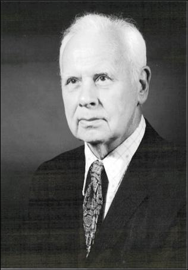

<!-- .slide: class="title-slide" --> # Co to jest telekomunikacja? Mikołaj Leszczuk --- ## Plan wykładu - pojęcie telekomunikacji, - rys historyczny: od telegrafu do Internetu, - architektury systemów telekomunikacyjnych, - modele ISO/OSI i TCP/IP. --- <!-- .slide: class="section-slide" --> # Pojęcie telekomunikacji --- ## Telekomunikacja > Dziedzina techniki i nauki zajmująca się transmisją wszelkiego rodzaju informacji na odległość. Przedmiotem transmisji mogą być między innymi: tekst, dźwięk, obraz, dane pomiarowe i dane komputerowe. --- <!-- .slide: class="section-slide" --> # Rys historyczny Od znaków elektrycznych do globalnej sieci komputerowej. --- ## Samuel F. B. Morse: telegraf <div class="columns"><div> - W 1832 r. wykorzystał magnetyzm do stworzenia telegrafii elektromagnetycznej. - Współtworzył kod znany jako alfabet Morse'a. - Kod korzystał z trzech stanów: brak sygnału, sygnał krótki i długi. </div><div>  </div></div> --- ## Alexander Graham Bell: telefon <div class="columns"><div> - Szkocki wynalazca telefonu i wielu innych urządzeń telekomunikacyjnych. - Zajmował się fizjologią dźwięku. - W ramach badań opatentował głośnik i mikrofon, a potem urządzenie przekazujące dźwięk na odległość. </div><div>  </div></div> --- ## Guglielmo Marconi: radio <div class="columns"><div> - Pionier radia i przemysłu elektronicznego. - W 1901 r. nawiązał łączność bezprzewodową między Nową Fundlandią i Kornwalią. - Laureat Nagrody Nobla z fizyki w 1909 r. za wkład w rozwój telegrafii bezprzewodowej. </div><div>  </div></div> --- ## Nikola Tesla: radio i sterowanie zdalne <div class="columns"><div> - Autor setek patentów w dziedzinie urządzeń elektrycznych. - Zaprezentował komunikację radiową już w 1893 r. - Tworzył także urządzenia zdalnie sterowane drogą radiową. </div><div>  </div></div> --- ## John Logie Baird: telewizja <div class="columns"><div> - Szkocki inżynier i twórca pierwszego działającego systemu telewizyjnego. - W 1925 r. zademonstrował transmisję ruchomych obrazów w Londynie. - Jego prace stały się podstawą eksperymentów BBC z nadawaniem telewizyjnym. </div><div>  </div></div> --- ## Od komputerów do Internetu <div class="columns"><div> - **George Stibitz:** zdalnie sterowany kalkulator elektromechaniczny; w 1940 r. przesłał zapytanie dalekopisem do komputera w Nowym Jorku. - **Robert Metcalfe:** współtwórca Ethernetu, technologii łączenia komputerów na krótkich dystansach. </div><div> <p></p> </div></div> --- <!-- .slide: class="section-slide" --> # Architektury sieci --- ## Dlaczego warstwy? - W latach 50. komputery i ich utrzymanie kosztowały miliony dolarów. - Firmy potrzebowały dostępu do centralnego komputera z odległych filii. - Rozwiązaniem stały się architektury sieci: uporządkowane sposoby przekazu informacji między urządzeniami końcowymi. --- ## Architektura sieci Zwykle jest organizowana **warstwowo**. Poszczególne architektury różnią się: - liczbą warstw, - sposobem ich realizacji, - zasadami nawiązywania połączenia między stacjami. --- ## Architektury zamknięte i otwarte <div class="columns"><div> **Zamknięte** - historycznie pierwsze, - duży wkład w rozwój komunikacji, - przykłady: IBM SNA, DEC DNA. </div><div> **Otwarte** - współczesne standardy, - interoperacyjność urządzeń różnych producentów, - przykłady: ISO/OSI, TCP/IP. </div></div> --- <!-- .slide: class="section-slide" --> # Model ISO/OSI --- ## ISO/OSI: idea modelu <div class="columns"><div> - Model systemów otwartych: urządzeń zdolnych do wymiany informacji z innymi systemami otwartymi. - Standard ISO 7498, rozwijany od końca lat 70. - Siedem niezależnych warstw; każda korzysta z usług warstwy niższej. </div><div>  </div></div> --- ## Siedem warstw ISO/OSI <div class="stack"> <div>Aplikacji</div><div>Prezentacji</div><div>Sesji</div><div>Transportowa</div><div>Sieciowa</div><div>Łącza danych</div><div>Fizyczna</div> </div> Komunikacja między odpowiadającymi sobie warstwami jest logiczna; faktyczna transmisja odbywa się przez medium fizyczne. --- ## Dlaczego model jest użyteczny? - Nie narzuca fizycznej implementacji warstw. - Pozwala producentom realizować warstwy niezależnie. - Ułatwia współpracę urządzeń różnych dostawców. - Daje programistyczną separację odpowiedzialności. --- ## Materiał: model ISO/OSI <video controls preload="metadata" poster="media/image8.png"><source src="media/slide-021-media1.mp4" type="video/mp4"></video> --- ## Warstwa 1: fizyczna - sprzężenie z medium, - sygnały, parametry elektryczne i mechaniczne, - strumień bitów. --- ## Warstwa 2: łącza danych <div class="columns"><div> - wykrywanie błędów, - niezawodność łącza i przepływ, - przykład: Ethernet, WLAN. </div><div>  </div></div> --- ## Warstwa 3: sieciowa - przesyła dane między węzłami sieci, - wyznacza drogę danych, - obsługuje błędy komunikacji i podsieć transportową, - przykłady: IP, IPX. --- ## Warstwa 4: transportowa - usługi połączeniowe „od końca do końca”, - przezroczysty transfer danych między stacjami, - opcjonalny podział danych na mniejsze jednostki, - przykłady: TCP i UDP. --- ## Warstwy 5–7 <div class="columns"><div> **Sesji** Sterowanie wymianą danych, dialogiem aplikacji i punktami retransmisji. **Prezentacji** Format danych, kompresja, kodowanie, szyfrowanie i konwersje. </div><div> **Aplikacji** Usługi komunikacyjne dla programów użytkownika, np. przeglądarek i klientów pocztowych. </div></div> --- ## Protokoły <div class="columns"><div> - Ustalają zasady komunikacji. - Definiują format komunikatów i sposób odpowiedzi. - Określają zachowanie w błędach i sytuacjach wyjątkowych. - Razem tworzą **stos protokołów**. </div><div>  </div></div> --- ## Pakiety i ramki <div class="packet"><span>Nagłówek</span><span>Dane</span><span>Opcjonalne informacje kontrolne</span></div> - Warstwy tworzą pakiety i ramki o strukturze zdefiniowanej przez protokół. - Krótsze jednostki ograniczają skutki błędów i zmniejszają opóźnienia. - Nagłówek zwykle zawiera adresy, identyfikator, numer części informacji i dane do obsługi błędów. --- ## Protokoły poszczególnych warstw <div class="columns"><div> **Aplikacyjne** FTP, Telnet, SMTP, SNMP, NetBIOS **Transportowe** TCP, SPX, NetBEUI </div><div> **Sieciowe** IP, IPX Zapewniają adresowanie, routing, weryfikację błędów oraz retransmisję. </div></div> --- ## Dialog równorzędnych warstw <div class="columns"><div> Przykładowe zadania protokołów: - żądania, odpowiedzi i potwierdzenia, - buforowanie i restart transmisji, - priorytety, kolejność i numerowanie pakietów, - adresowanie, routing, wykrywanie błędów i retransmisja. </div><div>  </div></div> --- ## Kapsułkowanie protokołów **Kapsułkowanie** to przesyłanie pakietu jednego protokołu wewnątrz pakietu innego protokołu. W drodze od aplikacji do medium dane przy każdej niższej warstwie zyskują nową formę i własny nagłówek. Tunelowanie jest praktycznym zastosowaniem kapsułkowania. --- ## Materiał: pakiety w stosie protokołów <video controls preload="metadata" poster="media/image12.png"><source src="media/slide-043-media2.mp4" type="video/mp4"></video> --- ## Materiał: przepływ danych przez ISO/OSI <video controls preload="metadata" poster="media/image13.png"><source src="media/slide-044-media3.mp4" type="video/mp4"></video> --- ## Konwersja protokołów - Tłumaczenie sygnałów elektrycznych albo formatów danych. - Umożliwia transmisję między różnymi systemami komunikacyjnymi. - Może obejmować np. zmianę kodu znaków lub transmisji asynchronicznej na synchroniczną. --- ## Materiał: jak zapamiętać warstwy <video controls preload="metadata" poster="media/image14.png"><source src="media/slide-046-media4.mp4" type="video/mp4"></video> --- <!-- .slide: class="section-slide" --> # Model TCP/IP --- ## Uproszczony stos protokołów <div class="columns"><div> Model TCP/IP łączy funkcje siedmiu warstw OSI w cztery warstwy: <div class="stack"> <div class="tcp">Aplikacji</div><div>Transportowa</div><div class="net">Internetu</div><div class="link">Dostępu do sieci</div> </div> </div><div>  </div></div> --- ## OSI a TCP/IP <div class="protocol-map"> <div class="head">ISO/OSI</div><div class="head">TCP/IP</div> <div>Aplikacji, prezentacji, sesji</div><div>Aplikacji</div> <div>Transportowa</div><div>Transportowa</div> <div>Sieciowa</div><div>Internetu</div> <div>Łącza danych, fizyczna</div><div>Dostępu do sieci</div> </div> --- ## Warstwa dostępu do sieci - Odbiera pakiety IP i przesyła je przez konkretną sieć. - Definiuje sprzęt sieciowy i sterowniki urządzeń. --- ## Warstwa Internetu - Obsługuje komunikację między maszynami. - Rozpoznaje odbiorcę i decyduje o wysłaniu bezpośrednio albo przez ruter. - Kapsułkuje dane, wypełnia nagłówki i weryfikuje dane przychodzące. --- ## Warstwa transportowa TCP/IP - Komunikacja między programami użytkownika. - Kontrola przepływu informacji. - Niezawodność: potwierdzenia po stronie odbiorcy i ponowne wysyłanie utraconych pakietów. --- ## Warstwa aplikacji TCP/IP - Najwyższy poziom: programy użytkowe. - Dostęp do usług niższych warstw. - Dane mogą być przesyłane jako komunikaty lub strumienie bajtów. --- ## Podsumowanie - Telekomunikacja to transmisja informacji na odległość. - Warstwowe architektury porządkują złożoność sieci. - ISO/OSI pomaga opisywać role warstw, TCP/IP jest praktycznym stosem Internetu. - Protokoły, pakiety, kapsułkowanie i konwersja umożliwiają współpracę systemów. --- ## Materiały dodatkowe - [ISO](https://www.iso.org/) - [Wikipedia](https://pl.wikipedia.org/) - W. R. Stevens, *TCP/IP Illustrated* - D. Comer, *Internetworking with TCP/IP*